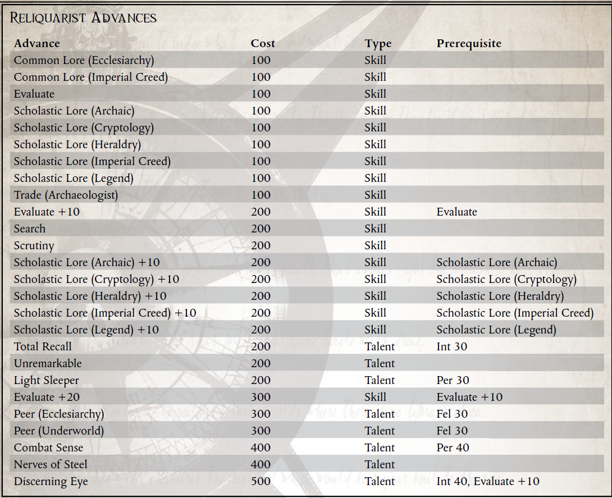

“烈士的鲜血是帝国的种子，如果我们不能收获他们付出生命和流血播种的利润，那无异于背叛。”
——拉斯隆·怀特耶，虔诚的总管
帝国是精神奉献的堡垒，具有多种形式，经常相互融合、转移或宣战。尽管所有合法的信仰（在国教眼中）至少与皇帝的神性有共同之处，但它们在许多方面存在分歧。假期、禁食、公认的圣徒和其他神圣人物，甚至诸如服装面料的合适种类等问题都可能是来自两个不同世界的个人之间激烈争论的问题。
值得庆幸的是，在更大的帝国信条中还有许多其他共同的教义，大多数信徒可以广泛同意。同意某些人物具有精神意义（塞巴斯蒂安·托尔和原体），清除那些被认为是异端（火）的人的首选方法和对圣物的崇拜都是普遍接受的做法。特别是，当涉及到文物时，可能会出现一系列全新的问题，因为经常引入真实性、相关性和重要性的问题。很少有学者会怀疑伟大的圣吉列斯金色头发的神圣性，但又有多少学者会接受 Quivvar Nog 的断脚呢？通常围绕这些问题的辩论可能需要数年，有时甚至是数百年才能解决。
在 Koronus Expanse 中，通常由 Reliquarists 来确定由 Rogue Traders、商人和其他不那么有品味的人在这些狂野星辰之间行走时发现的无数文物的合法性。这些顽强的冒险家和学者经常被发现钻研古代书籍，以发现圣人丢失的颚骨的位置，或者与外星神庙的中心作战，以找回数千年前的帝国十字军东征的象征。
盗贼商人的许多同事，甚至一些盗贼商人自己，都获得了使他们在职业生涯中成为圣物收藏者的知识，因为他们相对更频繁地接触到奇怪的、未识别的技术和人工制品。
对于圣物收藏家来说，抓住机会处理和保存一段神圣的帝国历史通常是足够的回报，但获得这种专业知识的背后可能还有其他动机。有些人可能秘密地属于诸如古尔迪亚人之类的邪教，他们希望将这些圣物保存在他们的秘密金库中，而另一些人可能只是与黑社会市场结盟的博学罪犯。许多卡利西斯贵族无疑通过将他碰巧“恢复”的遗物赠送给他们，得到了国教的认可。当然，这些物品也经常被私人收藏，远离当局的窥探。其他圣物收藏家对传教士 Jollus Marquette 的生活特别感兴趣，他在漫长而富有成效的一生中发现了无数具有难以置信价值的遗物。非官方和秘密的命令，如被背叛的教会和十二刀仍然继续马凯特秘密搜索科格纳修斯墓，他们在各个层面都参与了阴谋，因为他们悄悄地寻找这个被认为是失落的技术和帝国神圣遗物的聚宝盆信条
如果想要成功，圣物收藏家不能仅仅依靠他们对传说、传说和礼仪的了解，因为他们还必须能够评估与他们打交道的人的意图，并经常从不稳定的困境中解脱出来。
盗贼商人随从的安全通常是圣物收藏家的理想位置，因为它可以提供一定程度的保护，同时也有利于盗贼商人，尤其是那些更虔诚的人。外星世界的战利品在本质上并不总是外星人，它一定会温暖星际传教士的心，有一天，如果他们的下一次安置是他们的最后一次安置，他们缩小的头可能会被取回并受到适当的尊敬。
Reliquarist 的生活是一种（有时是过时的）虔诚与冒险的混合，因为找回被认为已丢失或被帝国敌人持有的遗物的任务可能充满精神和物质上的危险。它通常需要数小时的勤奋学习，尽管这些时期通常会被突如其来的活动打断，此时所有的赢或输都不是通过对圣徒传记的深入了解，而是通过冷静的智慧和知道什么时候出现麻烦的能力开始。一个圣物收藏家的生活可能不一定是名声和荣耀，但它最终可以以自己的方式得到满足，无论奖励来自黑社会账本还是来自 Adeptus Ministorum 官员的祝福。
所需职业：盗贼商人、探险家、传教士、总管或虚空大师
替代等级：1 或更高 (5,000 xp)
要求：智力40
其他要求：这位探险家必须至少发现了一件遗失的遗物，研究了它的起源，并确定了它在《帝国信条》的传说中的地位。

新天赋：敏锐的眼光
先决条件：智力 40，评估 +10
Explorer 具有无与伦比的能力，可以从其成型中的每一行或框架中的凹痕中读取项目的历史。如果关于给定的对象或人工制品有什么值得了解的，这个 Explorer 可以找到它。
这个探险家可以花费一个命运点来自动通过任何评估测试，其成功度数等于他的智力奖励。每当他以这种方式花费一个命运点时，他也可以通过自己的相关知识，隐藏在物品本身的线索或迹象，或者游戏大师的判断力的其他来源，获得对物品历史的某种形式的洞察力。